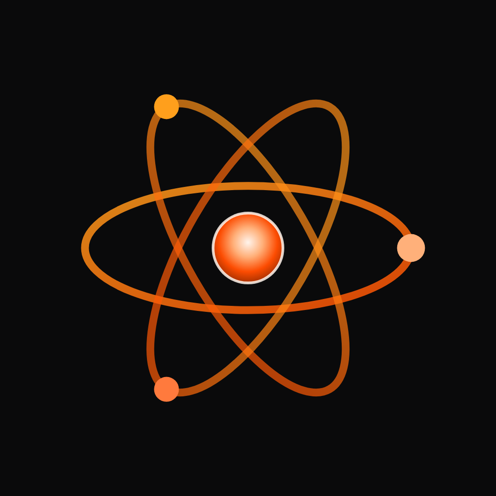

Las 12 publicaciones con las que arranca el perfil, para dueños de gimnasios y boxes de cualquier disciplina. A la derecha, el perfil tal como se verá; abajo, cada pieza con su texto listo para copiar, en el orden en que se publica.

Fotos de Unsplash con licencia libre (ninguna de Unsplash+), en blanco y negro y revisadas a tamaño completo: sin marcas legibles ni rostros protagonistas. La pieza 4 es un carrusel de 5 láminas. Las piezas claras muestran el producto con datos de ejemplo; los nombres son ficticios. WhatsApp de la demo: +502 4219 3692.